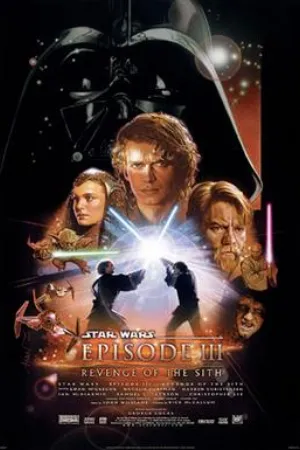
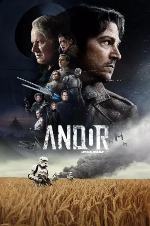
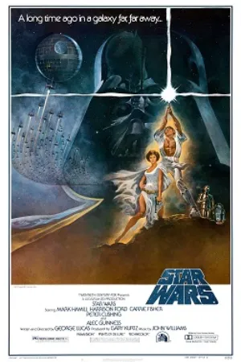

Where does Rogue One fit in the Star Wars timeline?
Rogue One takes place in the days just before A New Hope. It tells how a group of Rebels stole the Death Star plans, and its last scene runs straight into the first scene of the 1977 film.
Before and after
Revenge of the Sith ends with the Empire taking power. Solo is set about ten years before A New Hope. Andor follows Cassian Andor over the five years before Rogue One and ends where the film begins. Rogue One then covers the mission for the plans, handing off to Princess Leia’s ship at the start of A New Hope.
Watch order around Rogue One

1Star Wars: Episode III – Revenge of the Sith
- 2
Solo: A Star Wars Story

3Andor
 4
4Rogue One: A Star Wars Story

5Star Wars: Episode IV – A New Hope
Paste this key in Kuvacult to get these five titles as an ordered watchlist.
For every film, see Star Wars movies in chronological order.
Questions
Where does Rogue One fit in the Star Wars timeline?
Rogue One takes place in the days right before A New Hope, about 19 years after Revenge of the Sith. Its final scene leads straight into the opening of A New Hope.
Should I watch Andor before Rogue One?
You can watch either first. Andor is a prequel that ends where Rogue One begins, so watching it first gives Cassian Andor’s story more weight.
Do I need to see Rogue One before A New Hope?
No. A New Hope was made decades earlier and works on its own, but Rogue One explains how the Rebels got the Death Star plans.
Watch it with your friends.
Kuvacult is a free movie tracker with shared watchlists, a veto game for picking movie night, and séances for watching together.